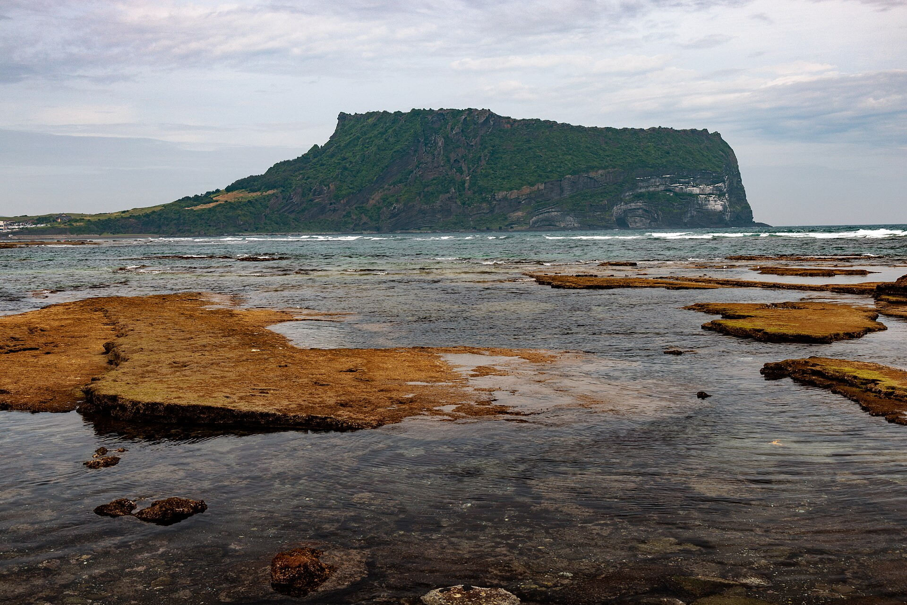
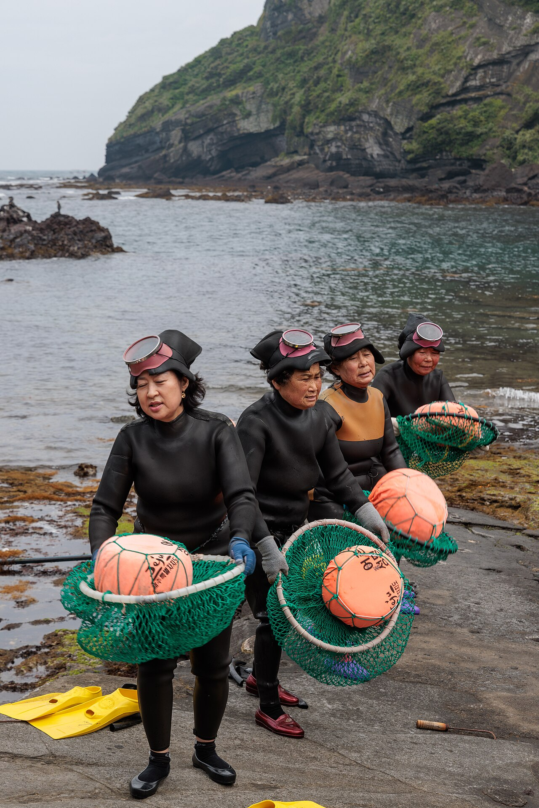
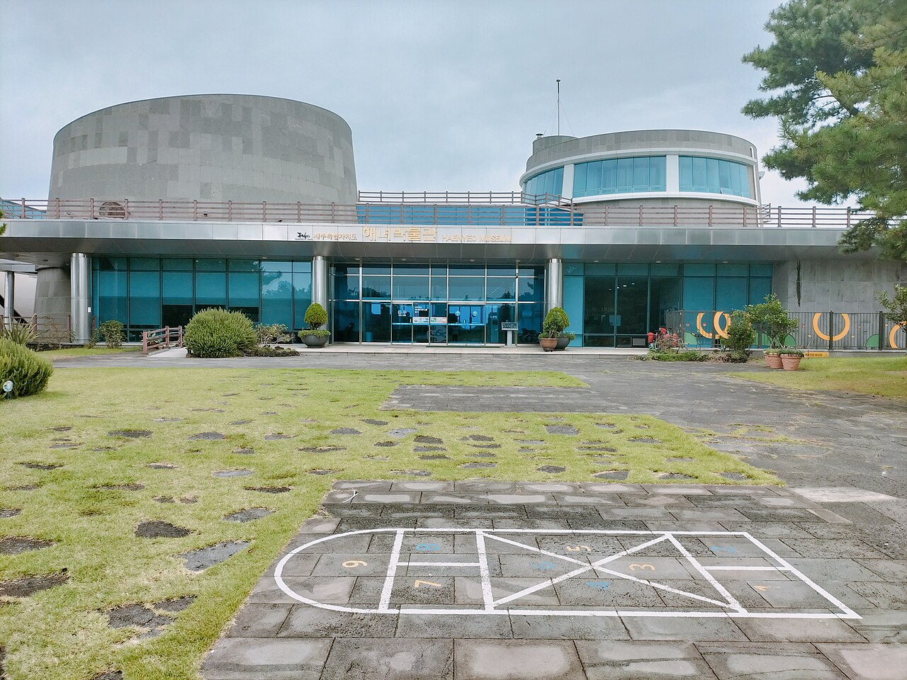
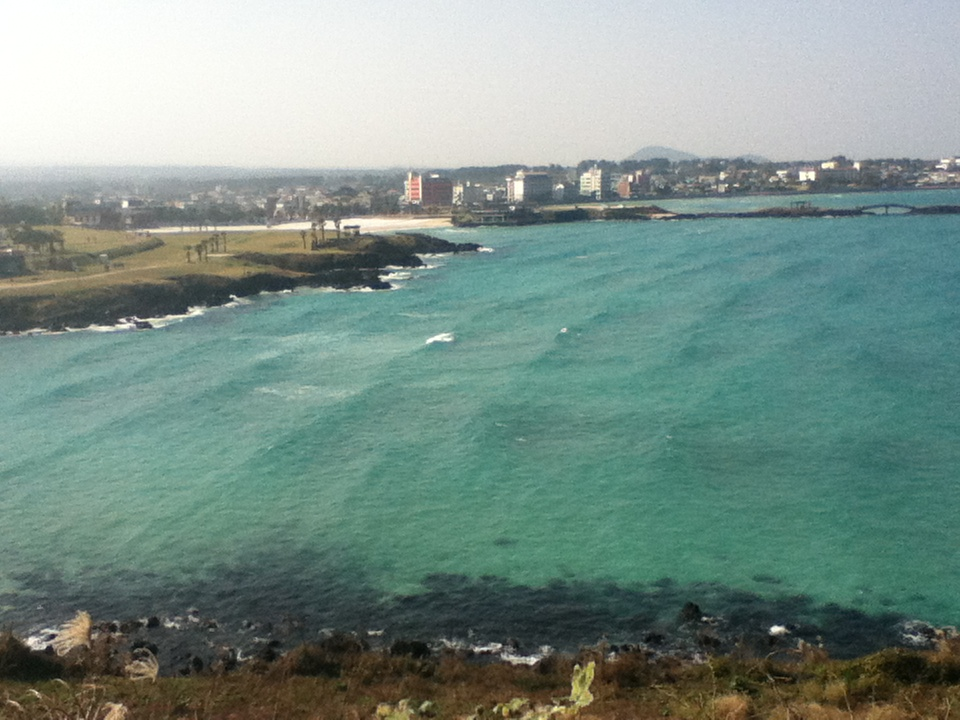
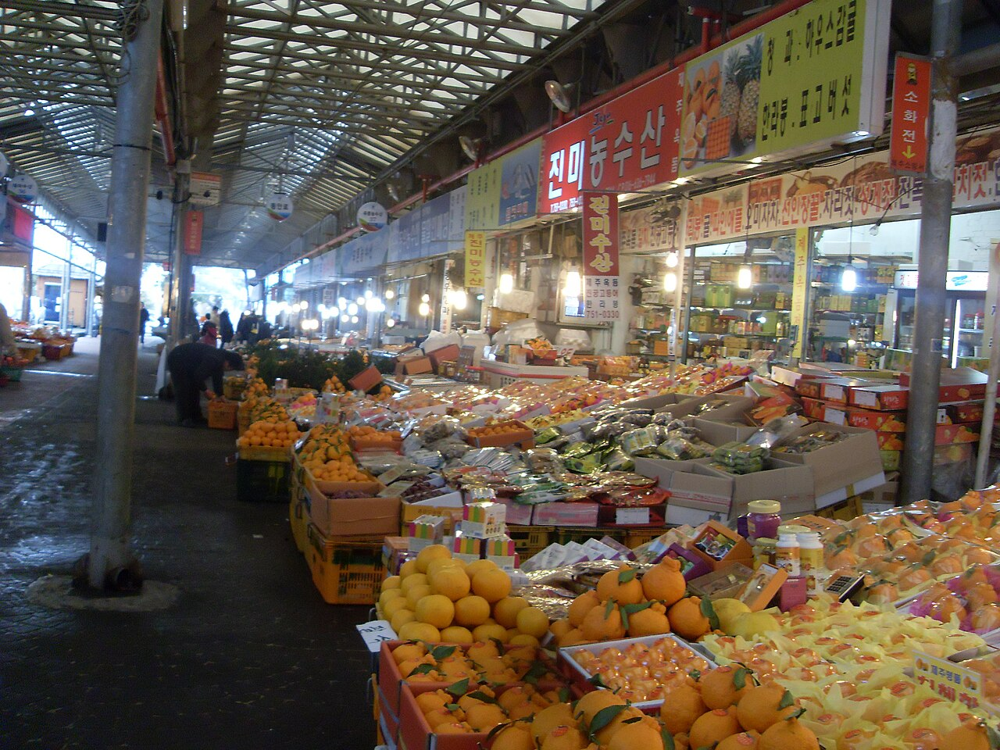
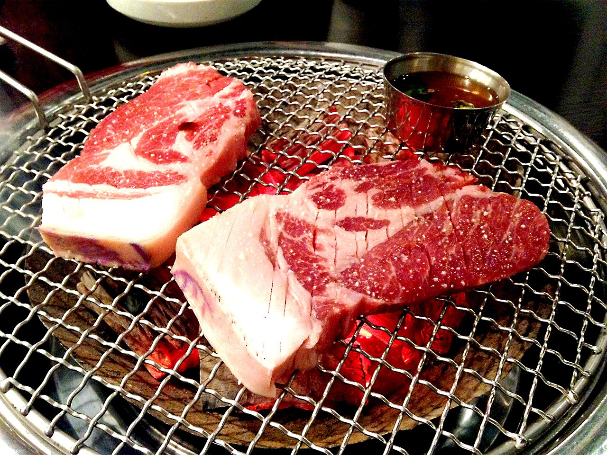

DAY 1
城山・海女慶生
1/17（日）落地直接往東，火山口接海女文化，傍晚回市區慶生。
09:20
濟州國際機場
入境、取車。國際駕照與台灣駕照正本要一起帶。
11:20
城山日出峰
機場往東約 1 小時 20 分。UNESCO 火山口，登頂約 30 分鐘，門票 5,000 韓元。

13:00
城山周邊海女餐廳
山腳一帶有海女現撈的海鮮攤與餐廳，鮑魚粥、海膽湯都是這附近的招牌。先吃再去博物館，順序剛好。
14:30
濟州海女博物館海女文化
城山往北約 30 分鐘，順路不繞。9:00–18:00、週一休館。常設展在一二樓，三樓有特展，紀錄片有中英韓三語，另有實物大的房舍與海女火塘復原（下海前後升火取暖、換衣服的石砌圍牆）、潛水工具與影像資料。慢慢逛約 1–2 小時，停車位充足。海女文化 2016 年列入 UNESCO 非物質文化遺產。


左：城山一帶真正上岸的海女／右：博物館建築本身
16:45
咸德海邊
回濟州市路上的白沙灣。天氣好就下車散步，風大就直接開回市區。

17:30
東門傳統市場
開到 21:00。橘子、乾貨、伴手禮先逛一輪，順便消化一下等晚餐。

19:00
黑豬肉一條街慶生晚餐
市場走路就到。招牌黑豬五花一份約 22,000 韓元，含小菜與冷麵，兩人點一套剛好。配濟州橘子燒酒或橘子馬格利。週日晚上先訂位比較穩。

住宿 濟州島海洋套房酒店・塔洞海邊・第 1 晚
評分8.4／10（1,503 則）
兩晚NT$5,278
停車免費室內停車場
走到黑豬肉街約 7 分鐘
走到東門市場約 12 分鐘
- 四星，房型為海景或市景雙人房，塔洞海邊那側看得到海
- 早餐一人 24,000 韓元、不含在房價裡——這價位不如去東門市場吃
- 市區停車位緊，室內停車場是選這間最實際的理由